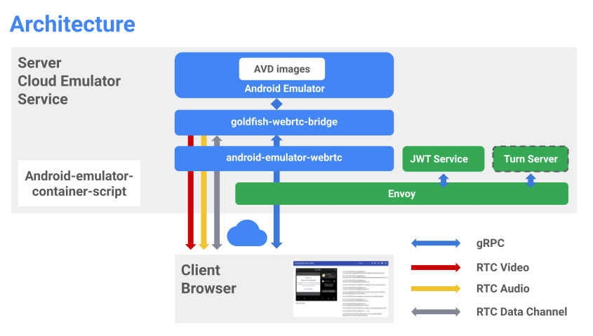

Introduction
Android のアプリをデモして自由に触らせたいという要望があった。
まんま 独自のクラウド エミュレータを作成する の内容なんだけど、これは Google Compute Engine (GCE) で、コンソールを通じて提供される代物。
だけど要望は、 **Amazon Web Services (AWS)**。
なので、GCE で使われている仕組みを手組する必要がある。
幸い、これらは https://github.com/google/android-emulator-container-scripts として提供されている。
が、調べたところ、日本語の記事は Android Emulator Container Scriptsを使ってDocker上でAndroidエミュレータを動かす くらい。
で、上の指示通りにやればできそうな気がするんだけど、なんか順番というか、途中で「ん？このファイル、どのタイミングで作られるの？」って感じで躓いた。
結局、自分は英語の別記事を参考にして環境を構築したので、自分なりの備忘録として残す。
How to use?
前提
- Ubuntu 22.04 or 20.04
- Minimal Install で構築した環境を使用
- docker
- 最新版を使うべきだと思う。
- 参考: 開発メモ その297 Ubuntu 22.04.1で最新のdockerを使う
* 非rootユーザで実行できること。下記のコマンドで設定。
- 参考: 開発メモ その297 Ubuntu 22.04.1で最新のdockerを使う
- 最新版を使うべきだと思う。
1 | sudo groupadd docker |
- docker-compose
- KVM
- クラウドで実行する場合
- Azure の場合、ネストされた仮想化 (Nested Virtualization) が有効であること
- AWS の場合、ベアメタルインスタンスを使用
- むしろ、AWS だけがこのような制約。他の クラウドプラットフォームは Azure と同様。
- クラウドで実行する場合
注意
Python を使用し、依存パッケージの状態によっては、バージョンアップによって、動かなくなる時があるので適宜対処が必要
ツールのインストール
22.04
Android SDK、Python 3.10 venv、NodeJS、npm をインストール。
1 | sudo apt-get install -y android-sdk python3.10-venv nodejs npm |
20.04
Android SDK、Python 3 venv、NodeJS、npm をインストール。
1 | sudo apt-get install -y android-sdk python3-venv nodejs npm |
~/.android/adbkey の作成
Android SDK をインストール後、
1 | adb devices |
ソースの取得
特定のコミットのソースをクローン。最新版でも構わないが、動いたのこれなので、メモとして残しておいた。
1 | mkdir android-emulator-container-scripts |
以後は、このフォルダで作業を行う。
仮想環境の構築
android-emulator-container-scripts 直下にあるスクリプトを source で実行。
1 | source ./configure.sh |
実行が終わると、仮想環境に切り替わる。
注意
ここで、emu-docker コマンドが使えるかどうかを試すこと。
実行すると
1 | emu-docker |
となる時がある。
Python の依存パッケージのバージョンアップしており、API が壊れている。
そのため、強制的にインストールしなおす。
1 | python -m pip install markupsafe==2.0.1 |
再度実行すると、下記のように無事に動くはず。
1 | emu-docker |
実行したいエミュレータを調べる
emu-docker list を実行すると、実行可能なエミュレータとイメージの一覧を取得できる。
1 | emu-docker list |
例えば。Android R が欲しいなら、grep で絞り込める。
1 | emu-docker list | grep R |
Android R の場合、下記のようなイメージが利用できる。
| 種別 | アーキテクチャ | 名称 |
|---|---|---|
| Android | x86_64 | android |
| Android TV | x86 | android-tv |
| Android (Google API 付き) | x86_64 | google_apis |
| Android (Google API 付き) | x86 | google_apis |
| Android (Google API と Playstore 付き) | x86_64 | google_apis_playstore |
| Android (Google API と Playstore 付き) | x86 | google_apis_playstore |
がある。
また、エミュレータは、各ホスト OS に対応するものが提供されている。
| リリースチャネル | OS |
|---|---|
| canary | macosx |
| canary | linux |
| canary | windows |
| beta | macosx |
| beta | linux |
| beta | windows |
| stable | macosx |
| stable | linux |
| stable | windows |
がある。
エミュレータの docker イメージ作成
例えば、emulator は stable、Android のイメージはバニラなバイナリを使いたい場合は、下記のように指定する。
1 | emu-docker create stable "R android x86_64" |
または、直接 zip をダウンロードして、指定する方法もある。
1 | curl -O 'https://dl.google.com/android/repository/emulator-linux_x64-8807927.zip' |
上記のどちらかを実行すると、docker イメージのビルドが始まる。
Google API 付きイメージを指定した場合は、ライセンスへの同意が求められるので適宜対応。
1 | WARNING:Please opt in or out of metrics collection. |
Web アクセスインターフェースの構築
docker-compose によって提供される Web インターフェースを動かすための docker イメージを作成。
create_web_container.sh を使用する。
引数には <username>,<password> と、Web インターフェースにログインするユーザ情報を指定する。複数指定可能。
下記は user1 と user2 を指定した例。
1 | ./create_web_container.sh -p user1,password1,user2,password2 |
エミュレータとブラウザは下記の図に従ってやり取りされる模様。

(引用:https://source.android.com/static/docs/devices/automotive/images/avd_cloud_01.png?hl=ja)
{kind=link}
注意
1 | ERROR: pip's dependency resolver does not currently take into account all the packages that are instal |
となる時がある。
setup.py に明示的に jinja2 のバージョンが指定されているためである。
そのため、手動で下記のように書き換え、
1 | - "jinja2==2.11.1", |
仮想環境に入りなおし、jinja2 をインストールしなおすことで対処する。
1 | source ./configure.sh |
コンテナの起動・停止
ADB を使わない場合
起動
1 | docker-compose -f js/docker/docker-compose.yaml up -d |
停止
1 | docker-compose -f js/docker/docker-compose.yaml down |
ADB を使う場合
起動
1 | docker-compose -f js/docker/docker-compose.yaml -f js/docker/development.yaml up -d |
停止
1 | docker-compose -f js/docker/docker-compose.yaml -f js/docker/development.yaml down |
ブラウザからのアクセス
80 ポートで待機しているので、アクセスしてみる。
{kind=link}
create_web_container.sh 実行時に指定したユーザ名とパスワードを使用してログインする。
{kind=link}
真っ黒な画面が出るが、右上の赤枠のアイコンを押下するとエミュレータ側の描画が始まる。
{kind=link}
ちなみに、全ての処理は共有しているので、別ユーザでログインしているかどうかで、画面が異なることは無い。
別ユーザが操作した内容はそのまま、自分の画面に適用される。
アプリのインストール
ADB を使って起動している場合、 *.apk をインストールできる。
まず adb から起動している adb サーバーに接続。接続後、デバイスの認識を確認。
1 | adb connect localhost:5555 |
接続確認後、下記でインストールが可能。
1 | adb install <apk ファイルのパス> |
多重起動しているエラーが出たら
1 | adb emu kill |
で対処。